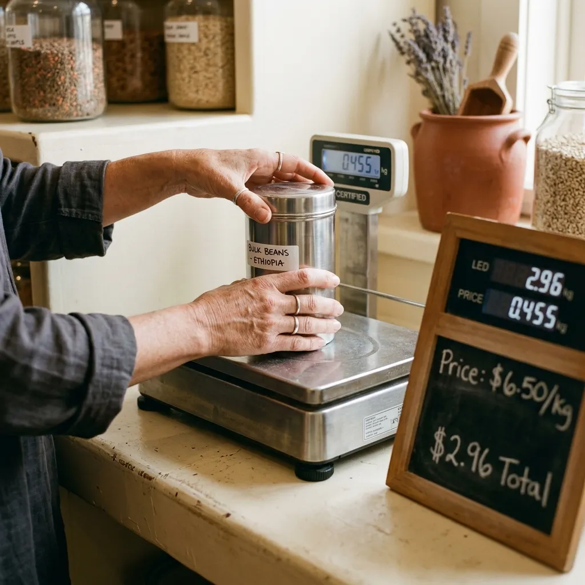

From initial container deposit to effortless household rotations.
How our Bristol counter and delivery rounds keep your cupboards perpetually stocked without packaging waste.
Transitioning your kitchen and utility room to a returnable-container weight ledger requires no special equipment or cumbersome shopping trips. We have structured our fulfillment system around straightforward scheduled rotations that fit naturally into urban working lives. From setting up your digital ledger account to swapping empty steel vessels at your doorstep, our four-step sequence removes friction, ensures precise metrological billing, and maintains spotless container hygiene across every single refill cycle.
First order and refill walkthrough
Our systematic onboarding and ordering process operates through four considered steps designed to integrate smoothly with busy city household schedules.
Account Activation
Register your online Tare Ledger account to establish your baseline household identification profile and recurring delivery preferences in under two minutes.
Selecting Your Staples
Choose your desired dry pantry grains, cleaning detergents, and personal care formulas from our inventory menu, specifying either standalone delivery or recurring biweekly schedule slots for your home.
Automated Ledger Attribution
Our operators pick clean brushed-steel canisters, scan their unique laser-etched IDs into your profile, and dispense provisions on certified scales. Your bill registers only the precise net weight delivered.
Doorstep Drop-off or Counter Pickup
Receive filled sealed canisters via zero-emissions electric cargo bikes across Bristol or collect directly at our Bedminster counter. Unpack clean steel jars straight onto your shelves without stripping waste packaging.

Return, swap and deposit reconciliation
The true power of the Halcyon Tare loop emerges when your initial supplies run low and regular container rotation begins. During your next scheduled delivery drop-off or walk-in counter visit, hand your spent steel vessels directly to our driver or assistant. We scan the laser-etched identification codes on outgoing empty containers and match them against incoming full replacements. Because your deposit follows the unique physical code engraved upon the steel, financial reconciliation happens automatically in real time. Upon arrival at our facility, we verify vessel integrity, log returned IDs, and credit your balance in full within twenty-four hours. This dependable exchange ensures your household deposit fund stays completely stable month after month.
Our Bedminster dispensary and delivery rounds
Our physical weighbridge dispensary operates from a restored brick dairy situated at 44 Bedminster Parade, Bristol, BS3 4HS. The counter is open for walk-in canister collection, deposit refunds, and immediate scale refilling from Tuesday through Saturday, between eight in the morning and six in the evening. For residential doorstep logistics, our zero-emissions electric cargo tricycles service a three-mile radius outward from Southville, delivering across postal zones BS1, BS3, BS6, BS7, and BS8 on Tuesdays, Thursdays, and Fridays. If outside our standard cycling band, we gladly pack and hold orders in our locker lobby for rapid afternoon counter collection.
Open your Tare Ledger household account
Beginning your household transition to our returnable steel ledger requires simple preliminary alignment with our counter team. When visiting our Bedminster dispensary for your inaugural collection, you do not need to bring bags, jars, or weighing equipment; our assistants provide clean canisters and handle registration scanning directly at the scale. To establish standing delivery orders or reserve your initial container quota online, register your household profile through our client system today. For specific questions regarding dietary allergens, bulk volume pricing, or tailored delivery scheduling for residential buildings, contact dispatch directly by telephone on 0117 496 0284 or via electronic correspondence at desk@halcyon-tare.co.uk. Our managers remain available throughout operating hours to guide your initial setup.